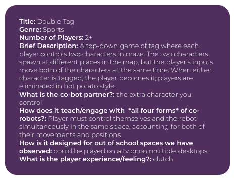

summary
Player-Programmed Partner Games (P3G) for Low-Resource Learners is an Innovations in Development project that seeks to increase access to informal STEM education in out-of-school time (OST) settings, while simultaneously bringing the human-robotics interaction paradigms of robotics education up to date. It addresses gaps in existing robotics STEM education programs through Design-Based Research (DBR) into a video game-based OST learning experience that teaches coding and computational thinking in a natural co-robotics context.
my work
Sunlight
As a game designer on the project, one of my main tasks was to develop a GDD (game design
document) and proposal for an educational game about co-robotics accessible to children from low-resource environments.
We started by studying our end users; we performed background research and examined the learning environments of
children within our target age group.
With this information in mind, I began working towards a proposal, brainstorming 30 physical and digital games, such as the one shown above, before synthesizing these ideas into 10 more refined ideas. Then, along with a fellow researcher, we narrowed these ideas into five and then one final idea over two iterations. We developed and presented a detailed game design document for the game, outlining elements such as transformational goals, narrative, core mechanics, risks, and more, and presented our work to the research team.
CoBox
Click here to see a project debrief on the CMU robotics website.